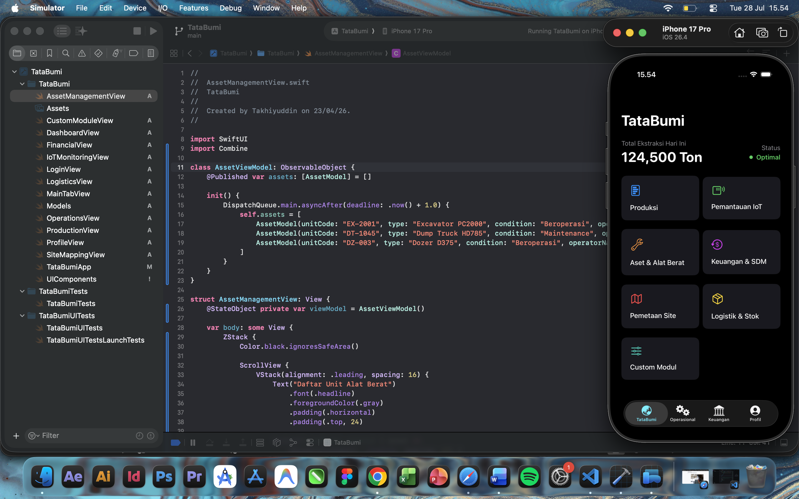
EnvironmentObject for dependency injection
across modules (Production, IoT, Logistics, HR).
NavigationStack.
MKMapView.
MKAnnotationView clustering system.
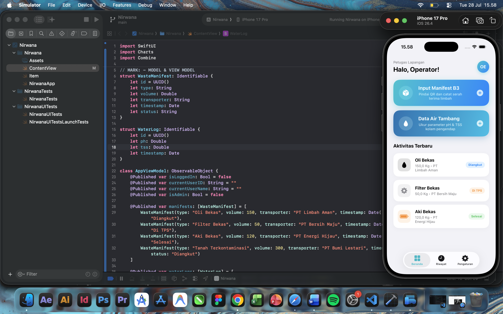
AnyShapeStyle and dynamic color
gradients that automatically adjust to light/dark modes to
ensure high visibility under the blazing field sun.
CoreLocation that
previously caused waste manifests to be recorded with
inaccurate location coordinates.
LazyVStack technique.
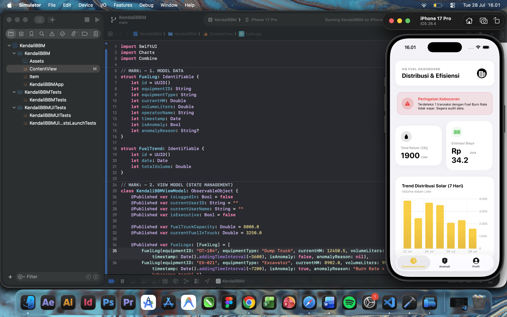
Path and AnimatableData in
SwiftUI that automatically changes color when tank
capacity reaches critical levels.
Identifiable protocol in the fleet list that
triggered app crashes during fast scrolling.
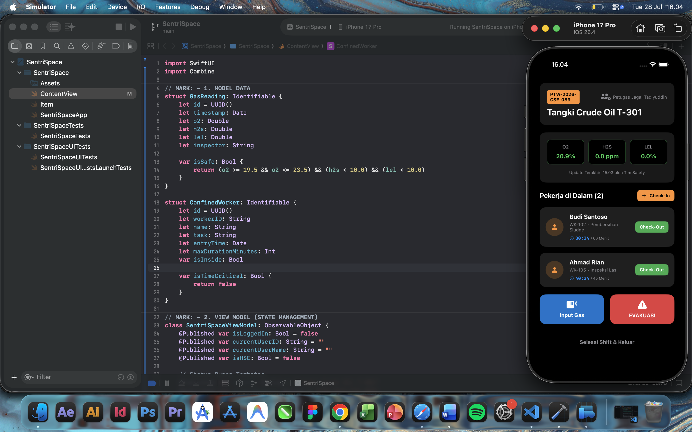
Text(_:style: .timer) in
SwiftUI to track workers' working duration inside tanks
live.
UIImpactFeedbackGenerator to provide
emergency tactile warnings to supervisors.
Date() difference when the
application became active again (resume).
@ViewBuilder on the inspection form
components.
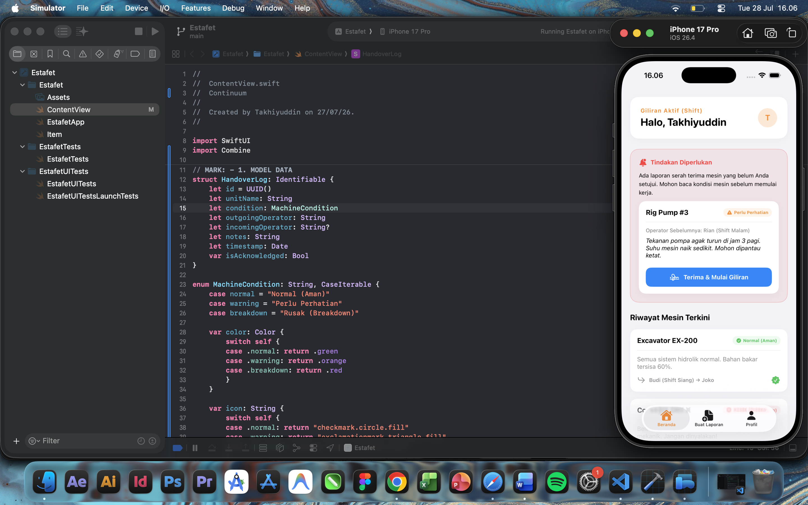
(Normal, Warning, Breakdown).
@State objects (fixed
by migrating to @StateObject).
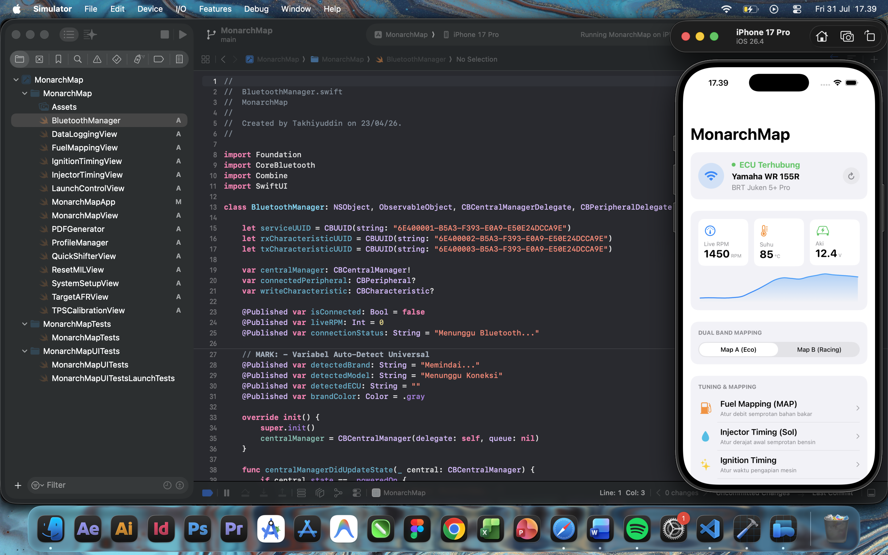
BluetoothManager berbasis
Delegate Pattern untuk memindai, terhubung, dan
menjaga kestabilan sinyal BLE dengan modul perangkat
keras.
AngularGradient dan `trim` animasi.
UIImpactFeedbackGenerator untuk memberikan
Haptic Feedback (getaran) mekanikal saat
tuner mengubah parameter mesin.
JSONEncoder/Decoder dan
@AppStorage untuk menjaga map
Dual Band agar tidak hilang saat aplikasi
ditutup.
UIGraphicsPDFRenderer secara
on-the-fly berdasarkan data limit RPM dan
identitas motor klien.
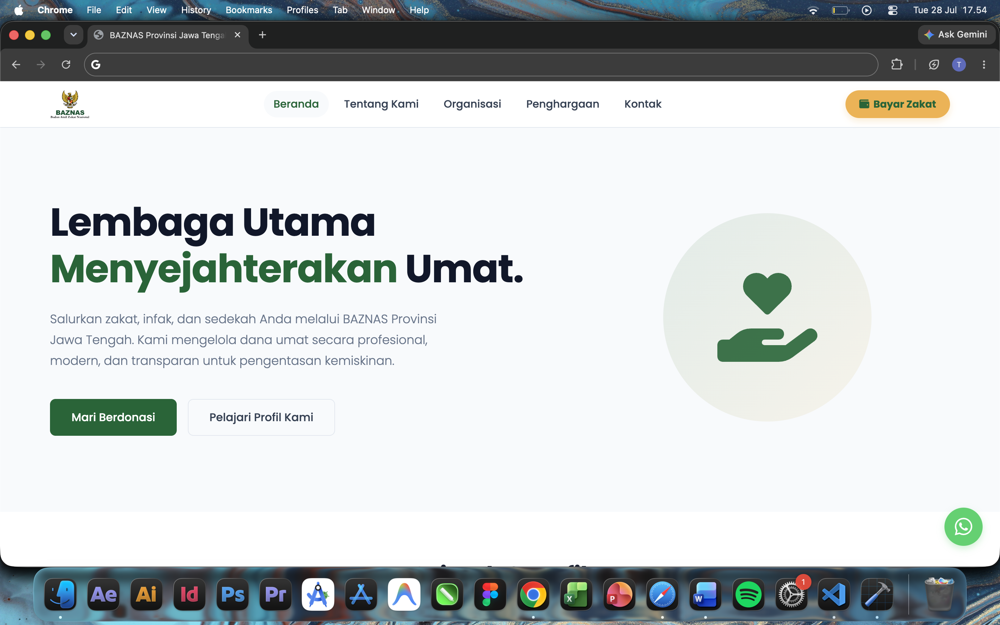
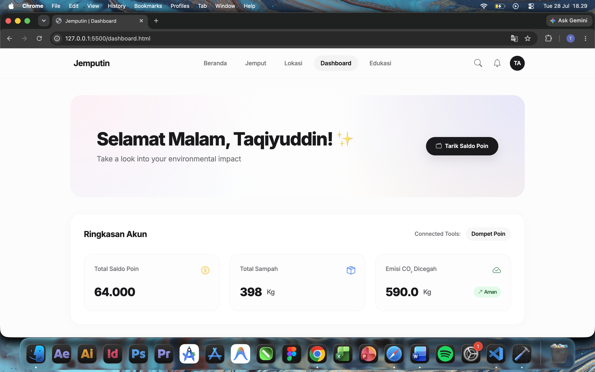
LocalStorage architecture.
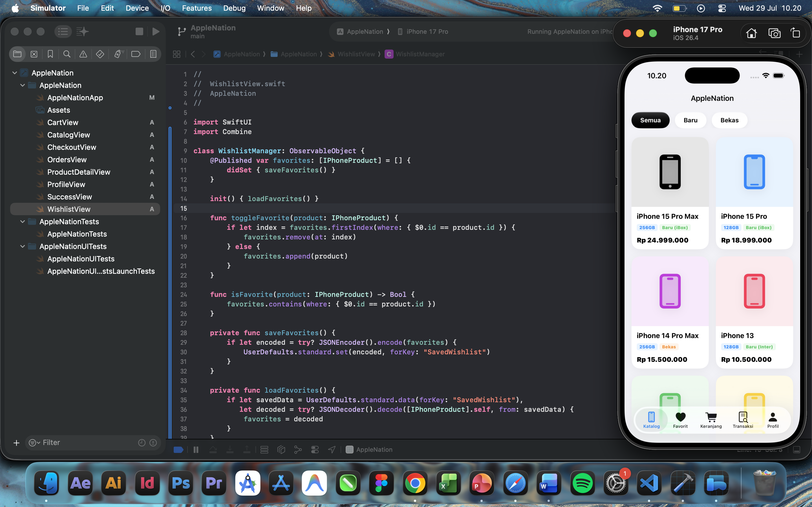
EnvironmentObject globally on
WindowGroup (CartManager, OrderManager,
WishlistManager) to synchronize state across all
navigation tabs (Catalog, Favorites, Cart).
UserDefaults by
encoding/decoding model objects to JSON format to
keep transaction history even if the app is closed.
@Published
& didSet) to trigger local storage functions
(saveItems) instantly whenever there are changes
to the cart contents.
.animation(.easeInOut) block when users
select color variants (Color Picker).
$) from the price calculation
reducer block.
import Combine on components that
massively implement Publishers (WishlistView &
OrdersView).
SuccessView to
prevent customers from duplicating the same order data
submission.
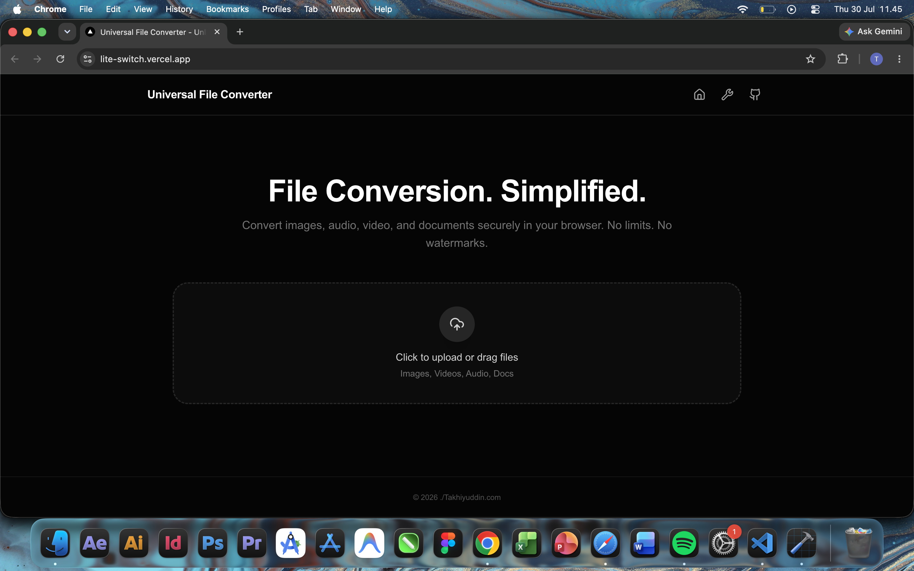
react-dropzone enriched with
hover and active transition animations
via Framer Motion.
URL.revokeObjectURL() execution routine.
Promise.all() to prevent
the browser interface from freezing (UI Blocking)
when rendering a queue line of dozens of files
simultaneously.
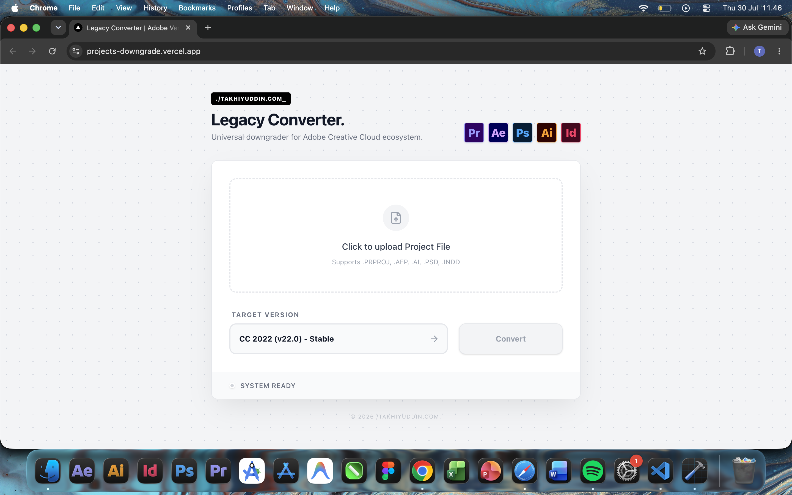
.prproj files using the built-in Node.js
zlib module without destroying the layer
hierarchy.
Version attribute on the
root project accurately and precisely.
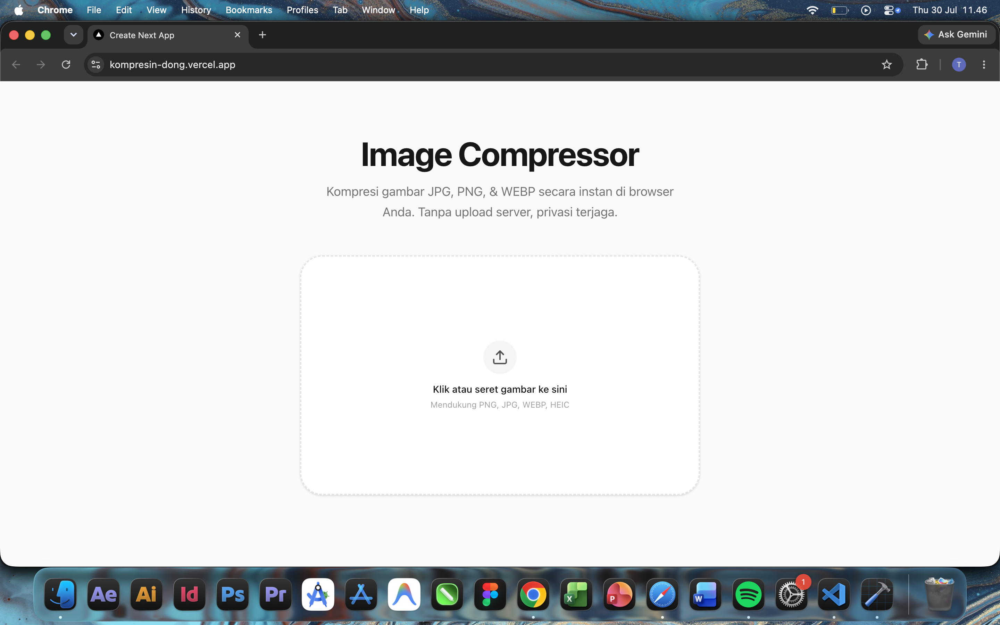
AnimatePresence to dampen the
layout jumping effect, so removing or adding
items to the queue feels smooth and fluid.
WEBP compression results by setting
strict boolean mask options in the
Canvas Export function.
image/*).
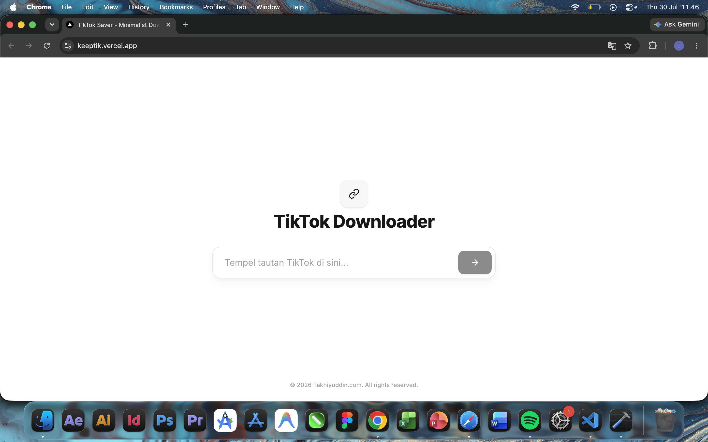
encodeURIComponent() execution protocol.